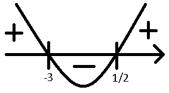

Nierówności kwadratowe
Od współczynnika a zależy wygląd wykresu funkcji kwadratowej:
- Jeśli a jest dodatnie to ramiona funkcji idą od wierzchołka w górę
- Jeśli a jest ujemne to ramiona funkcji idą od wierzchołka w dół
Etapy rozwiązywania nierówności kwadratowych:
1. Obliczenie delty
2. Wyznaczenie pierwiastków
3. Wyznaczenie przedziału
Przykład:
2x2 + 5x - 3 > 0
a > 0
Δ = 52 - 4 * (-3) * 2 = 49
√Δ = 7
x1 = (-5 - 7)/4 = -12/4 = -3
x2 = (-5 + 7)/4 = 2/4 = 1/2
Kiedy już obliczyliśmy pieriwstki rysujemy wykres wraz z nimi i odczytujemy z niego przedział

Nierówność musi być większa od 0, więc odczytujemy z wykresu wartości dodatnie
Odp.: x ∈ (-∞; -3) ∪ (1/2; +∞)